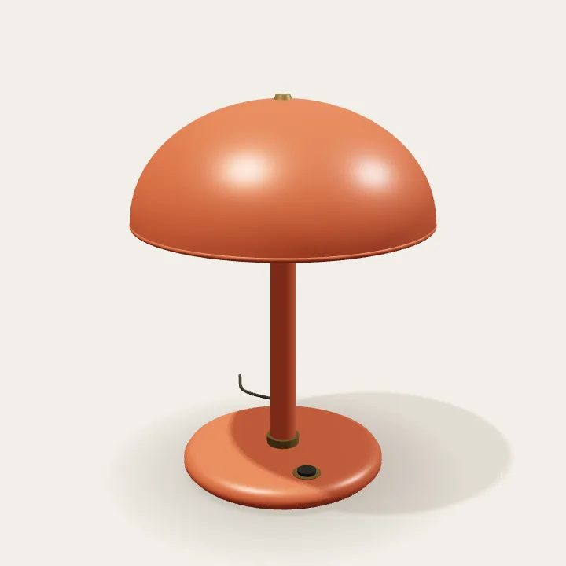
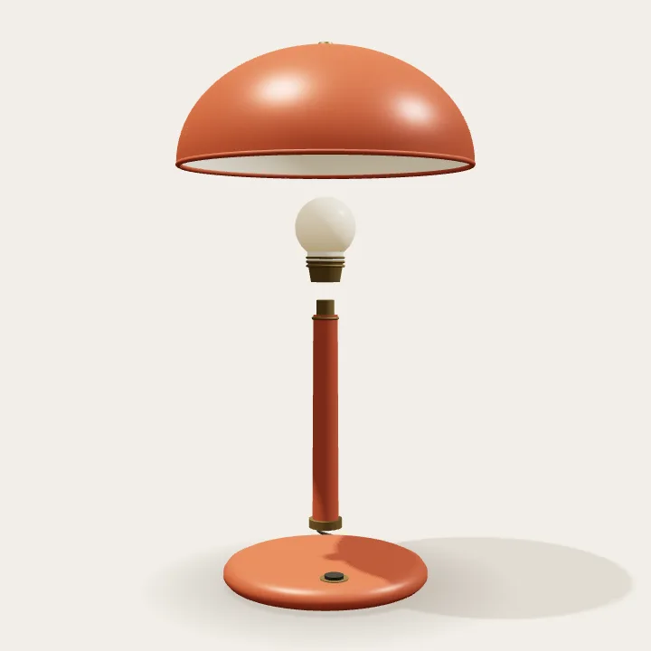

01 / Yapıyı aç
Her parçanın
bir yeri var.
Başlık yükselir, bağlantı ortaya çıkar. Taşıyıcı gövde ile geniş tabanın birbirini nasıl dengelediğini gör.
Nesne çalışması / 01
Bir formun nasıl bir araya geldiğine
yakından bak.
Üç parça. Bir bağlantı. Sıcak bir ışık.

01 / Yapıyı aç
Başlık yükselir, bağlantı ortaya çıkar. Taşıyıcı gövde ile geniş tabanın birbirini nasıl dengelediğini gör.

02 / İçine bak
Kamera alçalırken başlığın iç yüzeyi, ampul ve pirinç yuva görünür. Dışarıdan tek parça gibi duran formun içindeki düzen.

03 / Işığa dön
Parçalar birleşir. Başlığın altından yayılan sıcak ışık, nesnenin son biçimini tamamlar.

Hareket kapalıyken yapıyı üç sabit görüntüden inceleyebilirsin.
Hareketten sonra
Bu sahne bir lambanın yapısını anlatır. Kaydırma durunca sahne de durur; metin ve temel görüntüler hareket kapalıyken yerinde kalır.
Sahnenin kullanım notları